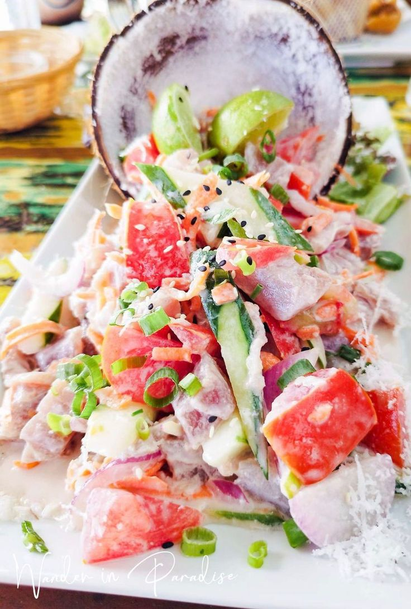
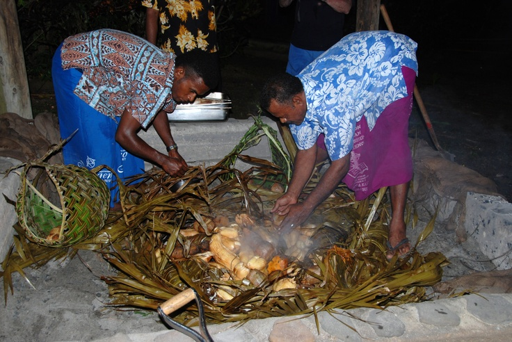
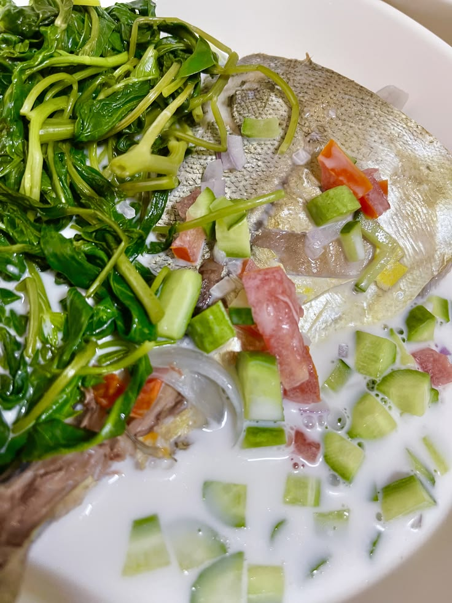

Kokoda
Kokoda is a popular Fijian dish made with raw fish, coconut milk, lemon juice, and vegetables.
Reference: Tourism Fiji

Lovo
Lovo is food cooked underground with hot stones. It is often used for special family and village events.
Reference: Tourism Fiji

Ika Miti
Ika Miti (also known as Ika Vaka Miti) is a traditional Fijian dish featuring fresh seafood cooked or marinated in a rich, creamy coconut sauce. In Fijian, ika translates to "fish," and miti refers to a coconut milk or cream dressing seasoned with herbs and citrus.
Reference: Tourism Fiji